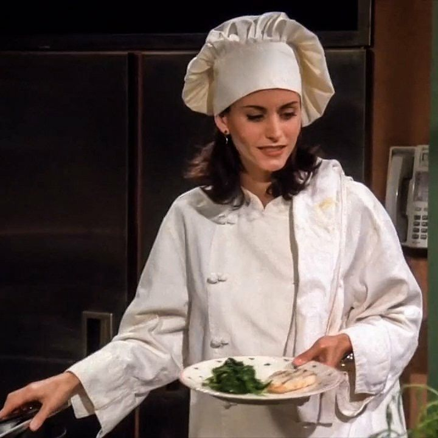
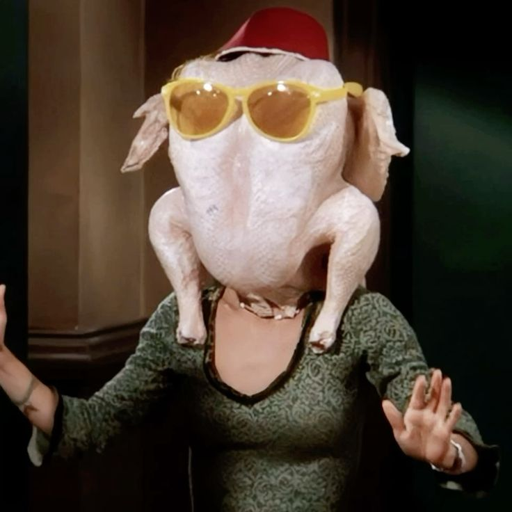
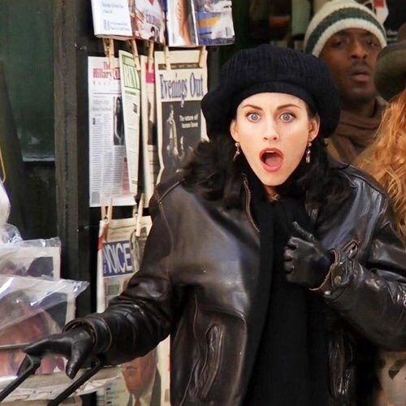

Conheça a Monica Geller
Monica Geller é uma das personagens mais importantes de Friends. Conhecida por seu jeito competitivo e organizado, ela gosta de manter tudo sob controle, principalmente quando o assunto é limpeza e rotina. Apesar de suas manias, Monica demonstra ser extremamente carinhosa e dedicada às pessoas que ama.
Desde o começo da série, Monica busca crescer profissionalmente como chef de cozinha. Sua determinação e esforço mostram uma personagem forte, que nunca desiste facilmente dos seus objetivos. Ao longo das temporadas, ela amadurece e aprende a lidar melhor com suas inseguranças e cobranças pessoais.

Sua personalidade intensa rende muitos momentos engraçados e marcantes. Monica é competitiva em jogos, teimosa em discussões e muitas vezes exagera em situações simples, criando cenas divertidas que se tornaram icônicas entre os fãs da série.
Além disso, Monica funciona como o ponto de união do grupo. O apartamento dela é onde grande parte dos amigos se reúne, fortalecendo ainda mais os laços entre todos. Sua amizade com Rachel Green é uma das mais importantes da série, mostrando companheirismo e apoio em diferentes momentos.


Sua relação com Chandler Bing também representa uma das histórias mais queridas de Friends. Monica mistura humor, força e sensibilidade, tornando-se uma personagem marcante e essencial para o sucesso da série.